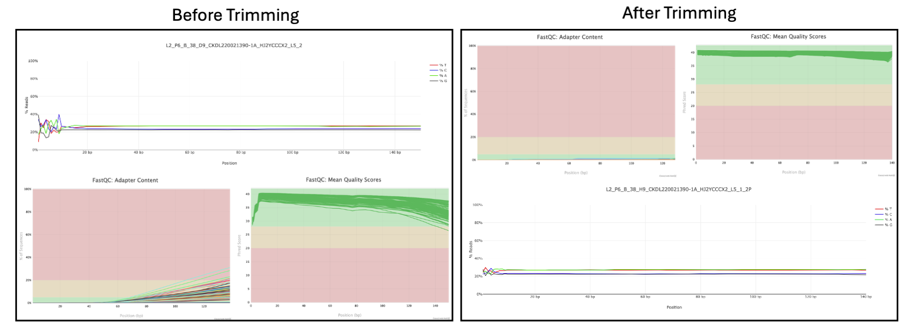
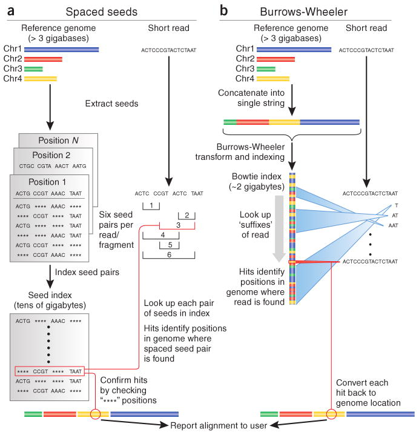
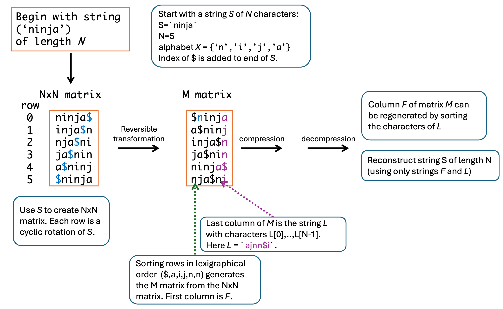
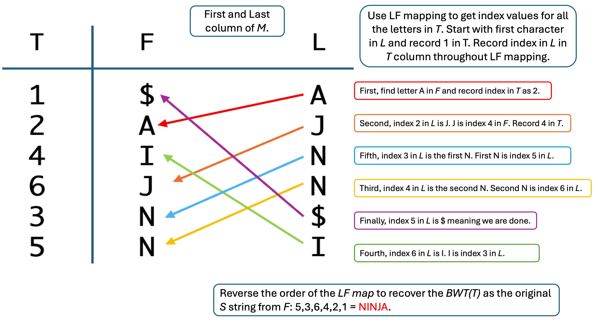
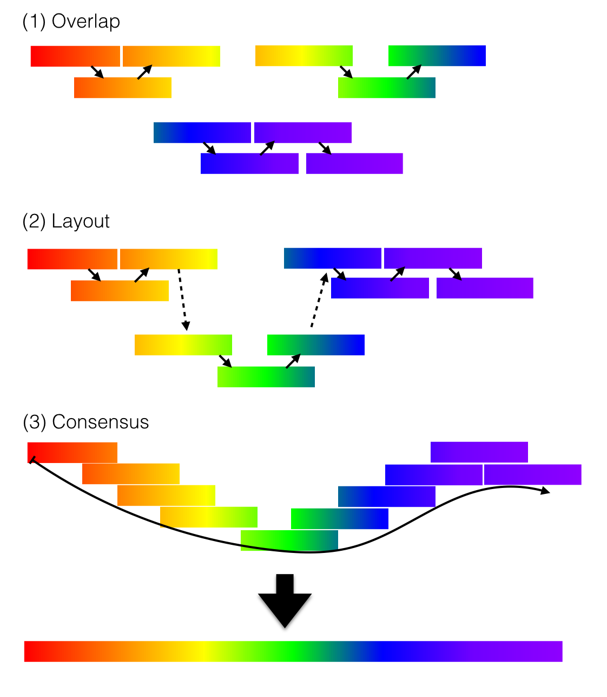

6 Genome Alignment and Genome Assembly
6.1 Genome alignment and genome assembly
Genome alignment and genome assembly are now central to almost every area of genome research, from variant discovery to comparative genomics and conservation biology1–3. This chapter connects short‑read alignment algorithms such as BWA, modern long‑read mappers, and telomere‑to‑telomere (T2T) genome assembly, with an emphasis on data literacy and critical interpretation of algorithmic choices1,3,4. Throughout, the Bogan et al. (2025) article cited in your Week 1 readings serves as a recurring example of how experimental design, alignment strategy, and assembly quality interact in real genome projects5.
This chapter builds directly on earlier chapters, where sequencing technologies, genome assembly assessment, and the “three C’s” of assemblies—continuity, completeness, and correctness—were introduced. We also revisit Figure 1.1, where the Human Genome Project, the 2004 euchromatic “completion” and the 2022 T2T human assembly were introduced3,6. Here, those concepts are revisited in the concrete context of read mapping and assembly pipelines, giving you tools to critically evaluate alignments and assemblies in papers such as Bogan et al. and in your own lab work4,7.
6.2 Pre‑alignment quality control and read trimming
Before any alignment, raw sequencing reads must be assessed for quality, adapter contamination, and systematic errors that could bias downstream analyses8,9. Common pre‑processing steps include per‑base quality profiling, removal of adapters and low‑quality trailing bases, and filtering out reads that are too short or dominated by ambiguous bases8,9. In practice these steps are assessed with FastQC and related tools introduced in Chapter 3. These early decisions about filtering and trimming directly affect coverage, error profiles, and the reliability of biological conclusions, highlighting data literacy as an essential skill for modern genome scientists4. Though there are many tools for trimming, including via Galaxy, the one we will use in this course is Trimmomatic, which we will use on the ASC in Lab 4.
The impact of trimming on downstream analyses has been systematically evaluated for Illumina data, where over‑aggressive trimming can reduce mapping rates and distort coverage, whereas moderate quality‑aware trimming typically improves variant calling accuracy10. In practice, students should learn to interpret quality score distributions, relate observed base‑quality decay and adapter content to library preparation protocols, and justify trimming parameters in the context of their experimental goals and consider carefully the trade‑offs between depth, complexity, and read quality4.

Side‑by‑side FastQC plots showing per‑base sequence quality, adapter content, and per base sequence content before and after trimming for a sample dataset from my own research9. Here you can see the improvements after trimming. It is typical that after trimming, FastQC report will result in an error for read length distribution simply due to trimming, which can be ignored.
6.3 Foundations of short‑read genome alignment
Short‑read alignment is a specialized case of approximate string matching, in which each read must be placed on a reference genome while allowing for sequencing errors and true biological differences1. Because dynamic‑programming algorithms such as Smith–Waterman scale with the product of read length \((m)\) and genome size \((n)\), direct alignment of billions of reads to gigabase genomes is computationally infeasible without algorithmic shortcuts1,11. Modern aligners therefore rely on a combination of indexing and filtering strategies to rapidly identify candidate loci, followed by a more precise local alignment step to verify and score each candidate1.
In this chapter, several computer‑science ideas appear repeatedly: hash tables (fast lookup tables built on hashing functions), \((k)\)‑mers (all possible substrings of length \((k)\) from a sequence), and permutations of strings, including reversible permutations such as the Burrows–Wheeler transform that let us rearrange a sequence but still reconstruct the original later1,11.
Two key error models dominate short‑read mapping: the Hamming distance, a metric for string comparison that counts sequence mismatches only, and the edit distance, which accounts for mismatches plus insertions and deletions1,11. Many practical aligners use weighted versions of edit distance, incorporating position‑specific penalties and base‑quality scores so that low‑quality mismatches are penalized less severely than confident ones1. Earlier, you saw how BLAST uses scoring matrices and E‑values to distinguish biologically meaningful alignments from hits expected by chance in a large database. Genome mappers, such as Burrows-Wheeler Alignment (BWA) tool, use the same basic idea at a different scale: each read–reference alignment is summarized by an alignment score and a CIGAR string describing the pattern of matches, mismatches, insertions, and deletions, and this score is then converted into a mapping quality that reflects how likely it is that the read truly originated from that genomic locus rather than from a similar sequence elsewhere. Thinking of BWA as a “genome‑scale BLAST with CIGAR strings” provides an entry point for understanding why the scoring scheme, gap penalties, and thresholds strongly influence both the reported alignment path (the CIGAR operations) and your confidence in each mapped read11.

Two strategies by which short read aligners take a large number of short reads (e.g., 500 million reads, each of length 150 base pairs) and align them to a reference genome (e.g., the haploid human genome reference sequence of ∼3 billion base pairs). (a) Spaced seed indexing algorithms use hash tables. The reference genome and the short reads are cut into equal-sized segments called seeds. Seeds from the short reads are paired and stored in a lookup table (hash table) and used to scan the reference. Matches to the seed index have an assigned genomic location. (b) The Burrows–Wheeler transform is used to efficiently represent the reference genome in software such as BWA2 and Bowtie. The reference genome is concatenated into a string, transformed using the Burrows–Wheeler transform (see Figure 6.4), and indexed. Reads are aligned beginning with the base at the 3′ end and continuing towards the 5′ end. This approach is very fast relative to spaced seed approaches. This figure also serves as your first comparison of two major families of short‑read aligners: hash‑table–based “seed and scan” tools versus BWT/FM‑index–based tools like BWA and Bowtie12. Figure reproduced from Trapnell & Salzberg13, with permission of the authors. This content is excluded from the Creative Commons license of this project as a whole.
6.3.1 Burrows–Wheeler transform and FM‑index
BWA is a canonical example of a Burrows–Wheeler transform (BWT)‑based aligner that indexes the reference genome using an FM‑index, and has become one of the most influential tools in bioinformatics, with 37,028 citations in Web of Science as of January 20262. At a high level, BWA replaces the naive “scan every base of the genome” approach with an indexed representation that makes it possible to search for a pattern of length \((k)\) in time roughly proportional to \((k)\), largely independent of the genome length1,12,14.
Before we get to the BWT itself, it is helpful to expand two of the computer‑science ideas introduced earlier that underlie many read mappers: hashing and reversible permutations. A hash table lets us map keys (for example all possible \((k)\)‑mers in the genome) to values (their positions) in a way that supports very fast lookup, and early mappers such as MAQ and SOAP built indices by hashing short words from the reference or the reads1,12. A reversible permutation is a way of rearranging the characters of a string (or rows of a matrix) so that we can later recover the original order; the BWT is one such permutation of the genome sequence that groups similar local contexts together and, crucially, can be inverted to recover the original text1,14.
The Burrows–Wheeler transform works by conceptually forming all cyclic rotations of the genome (terminated with a special end‑of‑string symbol), sorting those rotations lexicographically, and then taking the last column of this sorted matrix as the transformed string1. Because rows with similar prefixes end up adjacent after sorting, characters that share similar left‑hand contexts in the genome tend to cluster in the BWT, which is why it can be compressed effectively and searched efficiently1,11. The FM‑index augments this transformed string with two additional data structures: a table of cumulative character counts and a way to compute, for any position, how many times a particular character has appeared up to that position (a “rank” operation). Together, these allow us to perform backward search—matching a pattern from right to left—by repeatedly narrowing a range of rows in the sorted matrix that are consistent with the part of the pattern seen so far1,12,14.
In Lab 4, you will use BWA to build an FM‑index of the Saccharomyces cerevisiae reference genome and then map Illumina reads to it. This lab gives you practical experience with the concepts introduced here: you will see how indexing is performed in practice, inspect the index files that BWA creates, run alignments, and examine how CIGAR strings and mapping qualities reflect the underlying backward‑search and LF‑mapping operations discussed in this section.
Concretely, to search for a pattern like “GAT” in a BWT‑indexed genome, we start from the last character “T” and use the cumulative counts and ranks to find all rows whose first character is T, giving us an interval in the matrix that corresponds to all occurrences of “T” in the genome1. We then prepend “A”, updating the interval so that it now corresponds to “AT”, and then prepend “G”, updating again so that the final interval corresponds exactly to all rows that begin with “GAT”; the size of this interval tells us how many matches exist and its boundaries can be mapped back to coordinates in the original genome using LF‑mapping1,2. From an algorithm perspective, this is powerful because every extension step is \(O(1)\), so the total time is proportional to the pattern length and not the genome size, and because the index is compressed, we can keep the entire structure in memory even for large genomes1,12,14.

The Burrows–Wheeler transform rearranges a DNA string into a form that is easier to compress and index for sequence alignment. In this example, the Burrows–Wheeler Transform (BWT) for a short input string \(S\) of length \(N = 5\) is shown. The original string is expanded into all cyclic rotations, the rows are sorted lexicographically, and the first and last columns of the sorted matrix are used to recover the original sequence through the LF relationship. This transformation underlies efficient read mapping methods that search a compressed reference rather than scanning the full genome directly.
LF‑mapping (last‑to‑first mapping) is the concrete mechanism that makes the BWT a reversible permutation of the genome: it uses the fact that the first column of the sorted matrix is just the characters of the genome in sorted order, and that each occurrence of a character in the last column corresponds to the same relative occurrence in the first column1. In practice, this means that once we know which rows correspond to our pattern, we can follow LF‑mapping steps to walk backwards along each row and reconstruct the original genomic coordinates, which is how BWA turns a range in the FM‑index into a concrete alignment position2. When mismatches or small gaps are allowed, BWA explores nearby paths in this index by controlled backtracking—trying alternative characters at a limited number of positions—rather than by rescanning the entire reference, which explains its efficiency compared with naive dynamic programming over the whole genome1,2.

LF mapping links positions in the last (L) columns of the Burrows–Wheeler matrix to corresponding positions in the first column (F), allowing the original string to be recovered step by step. In genome alignment, this same principle is used to move backward through a compressed index while extending matches against a reference sequence. The figure shows how the original string can be reconstructed from the BWT by following the mapped character order from the last column to the first.Use this figure when you work through the BANANA$ exercise in class to map each step in your pencil‑and‑paper calculation onto rows, columns, and LF‑mapping arrows in the diagram.
| Program | Algorithm | SOLiD | Longa | Gapped | PEb | Qc |
|---|---|---|---|---|---|---|
| Bfast | hashing ref. | Yes | No | Yes | Yes | No |
| Bowtie | FM-index | Yes | No | No | Yes | No |
| BWA | FM-index | Yesd | Yese | Yes | Yes | No |
| MAQ | hashing reads | Yes | No | Yesf | Yes | Yes |
| Mosaik | hashing ref. | Yes | Yes | Yes | Yes | No |
| Novoaligng | hashing ref. | No | No | Yes | Yes | Yes |
cMake use of base quality in alignment; dBWA trims the primer base and the first color for a color read; eLong-read alignment implemented in the BWA-SW module; fMAQ only does gapped alignment for Illumina paired-end reads; gFree executable for non-profit projects only.
6.3.2 Short‑read aligners in practice: BWA‑aln, BWA‑mem, and ancient DNA
Even though BWA was introduced in 2009, its algorithms remain central to current human genomics and ancient DNA research. BWA implements three major algorithms: bwa‑aln, an older backtracking aligner optimized for short reads; bwa‑sw, an early Smith–Waterman‑style local aligner; and bwa‑mem, a more recent algorithm designed for longer reads that uses maximal exact matches (MEMs) as seeds2,12. Bwa‑aln does not rely on long exact seeds; instead, it systematically explores the space of approximate matches with bounded numbers of mismatches, guaranteeing that all alignments within a specified edit distance are found, at the cost of increased computational effort for long reads1,2. In contrast, bwa‑mem heuristically searches for MEMs of length at least 19 bp by default, which works well for modern 150 bp Illumina reads but can fail for highly degraded ancient DNA (aDNA) reads that harbor many mismatches and deamination‑induced substitutions15. This newest algorithm is the standard recommended aligner for short reads through the genome analyis toolkit (GATK) introduced in Chapter 4 of this textbook. You will get a chance to use bwa‑mem in Lab 4 to map short reads from a yeast experimental evolution experiment to the yeast genome.
For example, in the case of a 32 bp read with two widely separated mismatches, the longest exact match may be only 11 bp, shorter than bwa‑mem’s default minimum seed length, causing the true alignment to be missed entirely even when it would be acceptable under the overall mismatch threshold15. Reducing the seed length would in principle restore sensitivity, but an 11‑mer occurs many times in the human genome, so seeding on all such matches would render bwa‑mem impractically slow15. Bwa‑aln therefore remains widely used in modern workflows using ancient DNA (aDNA) because its non‑exact seeding strategy maintains sensitivity for short, error‑prone reads without requiring extremely short exact seeds, illustrating how algorithmic assumptions and parameter defaults embed implicit priors about read length and error profiles2,15.
Mapping quality (MAPQ) estimation further complicates comparisons between aligners. Bwa‑aln assigns a MAPQ ≥ 25 when no additional alignment with one extra mismatch is observed, effectively encoding a heuristic notion of uniqueness that many downstream pipelines adopt as a hard filter15,16. This leads to a close coupling between bwa‑aln’s internal heuristics and community practices such as “MAPQ 25” cut‑offs, which may inadvertently penalize alternative aligners whose MAPQ models respond differently to the number of mismatches1,15.
6.4 Long‑read sequencing and the evolution of alignment algorithms
In Chapter 2 you saw how third‑generation sequencing technologies such as PacBio and Oxford Nanopore Technologies (ONT) extend read lengths from a few hundred bases to many kilobases, at the cost of substantially higher error rates in their early implementations17–19. Those same properties that make long reads powerful for resolving repeats and structural variants also force us to rethink alignment algorithms: a mapper designed around short, mostly accurate Illumina reads will struggle when almost every base has a non‑trivial chance of being wrong1. As long‑read chemistries have improved—from noisy continuous long reads to highly accurate PacBio HiFi and ONT duplex reads—alignment algorithms have evolved in parallel to exploit the new balance between length and accuracy3,20.
Conceptually, long‑read mapping started from the same seed‑and‑extend idea you encountered for short reads: identify promising seed matches between read and reference, then extend them with dynamic programming1. However, for long reads almost every read contains many thousands of potential seeds, so the bottleneck shifts from “can we find any seed?” to “can we select and connect a small number of informative seeds into a coherent alignment path?”21. Modern long‑read aligners therefore adopt a seed‑and‑chain paradigm: they choose a sparse subset of seeds (for example minimizers or \((k)\)‑min‑mers) and then use fast chaining algorithms in this reduced “minimizer space” to build an approximate alignment path before running any expensive base‑level alignment21.
Minimap2 is a prototypical example and the recommended aligner of choice for GATK with long read datasets. It computes minimizers from both reads and reference, discards most of them to keep only a sparse sketch, and then uses dynamic programming in two dimensions (position in read vs. position in reference) to chain collinear seeds into long candidate alignments, which are then refined with banded alignment around the chain21. Other tools, such as Winnowmap2, modify the seeding step to down‑weight repetitive \((k)\)‑mers so that the index is dominated by more informative seeds, which reduces spurious matches in repeat‑rich regions21. Other aligners, such as NGMLR and LRA, adjust their scoring schemes and chaining heuristics to be particularly sensitive to long insertions, deletions, and complex rearrangements, which is important when long reads are used primarily for structural variant discovery rather than single‑nucleotide variant calling21,22.
| Software tool | Description | Key features | Benchmarking insights |
|---|---|---|---|
| Minimap2 | Versatile aligner for long nucleotide sequences. | Efficient alignment of PacBio and ONT reads; supports spliced alignment. | Computationally lightweight; recommended for large‑scale use and as a default mapper in many pipelines. |
| GraphMap2 | Aligner optimized for long, error‑prone reads. | High sensitivity; suitable for complex genomes. | High computational burden; not ideal for whole human‑genome exploration. |
| LRA | Designed for accurate alignment of long reads. | Balances speed and accuracy; handles high‑error‑rate reads and complex structural variants. | Effective with PacBio data; offers strong structural‑variant performance in human genomics. |
| NGMLR | Tailored for structural variant detection. | Efficiently aligns reads with large insertions or deletions and complex breakpoints. | Resource‑intensive and time‑consuming; produces reliable SV alignments and is useful as a supplementary tool. |
| Winnowmap2 | Aligner for long reads with repetitive sequences. | Utilizes minimizer‑based seeding with repeat‑aware weighting; reduces spurious alignments. | Computationally efficient; complements Minimap2 by offering different insights in repeat‑rich regions. |
From an algorithmic standpoint, you can view these tools as different points along a design space defined by three main choices: (1) how seeds are selected (uniform minimizers versus repeat‑aware seeds), (2) how chains are scored and constructed (emphasis on collinearity vs. tolerance for large jumps), and (3) how expensive base‑level alignment is used to refine candidate chains21. For example, a tool tuned for transcriptomics might favor seeds and chains that support spliced alignments across introns, while a tool optimized for structural variants may accept non‑collinear seed chains that jump across complex breakpoints21,22. These design decisions echo the trade‑offs between sensitivity and speed that you saw earlier for BLAST and BWA: more seeds and more permissive chains usually increase sensitivity, but they also increase runtime and memory usage1,11.
Benchmarking is the process of systematically evaluating software tools on curated datasets using agreed‑upon metrics, so that performance claims are supported by evidence rather than anecdotes. In the context of long‑read alignment, typical benchmarking metrics include alignment recall and precision (how many true read placements are recovered and how many mappings are correct), structural‑variant detection accuracy, runtime, and memory usage22. Datasets may be fully synthetic (where the true answer is known), based on simulated reads from real genomes, or high‑coverage “gold standard” genomes such as the Genome in a Bottle resources.
In their 2023 study, LoTempio and colleagues benchmarked several long‑read genome sequence alignment tools for human genomics applications, including Minimap2, GraphMap2, LRA, NGMLR, and Winnowmap222. They found substantial trade‑offs between computational efficiency, alignment success rates, and the ability to detect structural variants: no single aligner performed best on all metrics, and different tools excelled on different variant classes and coverage regimes22. Their results support a combination strategy rather than a single‑tool mindset: in many human‑genome projects it is reasonable to use Minimap2 as a fast, baseline mapper, add Winnowmap2 to improve performance in repeat‑rich regions, and optionally incorporate NGMLR or LRA when highly accurate structural‑variant discovery is a central goal22.
In Lab 8, you will take on a similar role for variant calling tools. Different student groups will read and discuss papers that evaluate a variety of variant‑calling tools on reference datasets such as Genome in a Bottle, focusing on how study design, metrics, and datasets shape the conclusions. In class, we will synthesize these results to formulate tool recommendations for different project goals, mirroring the way LoTempio et al. used systematic benchmarking to motivate their alignment recommendations.
For you as a practitioner, the key message is that long‑read mappers are not interchangeable black boxes. When you design a pipeline—whether for a T2T‑style assembly evaluation, a structural‑variant survey, or an ecological genomics project like Bogan et al.—you should explicitly match your choice of aligner (and its preset or parameter set) to the sequencing technology, read accuracy, and biological question3,5. Just as you learned to justify trimming thresholds and short‑read aligner settings earlier in the chapter, you should be prepared to justify why a particular long‑read mapper, or combination of mappers, is appropriate for your data.
6.5 From alignment to assembly: concepts and algorithms
Alignment assumes that a reasonably complete reference genome already exists; assembly tackles the inverse problem of reconstructing that genome from a noisy collection of reads1,3. In de novo assembly, reads are connected to each other using overlaps or shared \((k)\)‑mers, forming graphs whose paths represent candidate genome reconstructions1,3,11. This section develops the main graph formulations, links them to core computer‑science ideas, and prepares you for the long‑read and pan‑genome methods that follow.
6.5.1 Key computer‑science ideas for assembly
Assembly algorithms borrow heavily from graph theory. A graph is a collection of vertices (nodes) connected by edges (links); in assembly, vertices represent reads or \((k)\)‑mers and edges encode evidence that two sequences are adjacent in the genome1,3. A directed graph is one in which each edge has a direction, such as A → B; assembly graphs are directed because DNA has a defined 5′→3′ orientation, and edges respect that orientation1,3. A path is an ordered sequence of edges that visits a series of vertices, and an assembled contig corresponds to a path through the assembly graph that spells out a candidate genomic sequence1.
The term contig refers to a maximal contiguous stretch of sequence derived from the graph that contains no unresolved branches; in many assemblers this corresponds to a maximal non‑branching path and is sometimes called a “unitig”3. For the purposes of this book, it is enough to view contigs as the basic building blocks that assemblers output before higher‑level scaffolding connects them into chromosome‑scale sequences. A related idea is that of a transitive edge: an edge A → C is transitive if the path A → B → C already exists. Removing such edges (a process called transitive reduction) simplifies overlap graphs without losing information and makes later path‑finding more efficient1,3.
You also saw \((k)\)‑mers in earlier chapters: all substrings of length \((k)\) in a sequence. In assembly, \((k)\)‑mers play a dual role as basic units of overlap between reads and as vertices in de Bruijn graphs3,11. Choosing \((k)\) therefore affects both sensitivity to low‑coverage regions and the ability to distinguish repeats, in much the same way that word size influences BLAST sensitivity.
6.5.2 Classical graph formulations
Two classical graph paradigms dominate assembly algorithms.
In an overlap graph (and its compressed form, the string graph), each read is a vertex and a directed edge connects reads whose suffix and prefix overlap by at least some minimum length1,3. After transitive edges are removed and reads that are fully contained within longer reads are discarded, long non‑branching paths are merged into contigs that represent contiguous genomic segments3. This overlap–layout–consensus approach matches the original Sanger‑era view of assembly: identify overlaps, lay out reads in order, then compute a consensus sequence.
In a de Bruijn graph (DBG), the basic unit is not a whole read but a \((k)\)‑mer. Vertices represent all \((k)\)‑mers observed in the reads, and a directed edge connects two vertices when their \((k)\)‑mers occur consecutively in a read and therefore share \((k-1)\) bases3,11. A path through the DBG corresponds to a sequence of \((k)\)‑mers whose overlaps reconstruct an assembled sequence, and contigs arise from maximal non‑branching paths in this graph. Repeats appear as cycles or branching structures, and the choice of \((k)\) determines how easily the graph distinguishes true genomic branches from noise: small \((k)\) tends to tangle the graph in repeats but maintains connectivity in low‑coverage regions, whereas large \((k)\) resolves many repeats at the cost of fragmenting low‑coverage areas3,11.

Overlap-layout-consensus (OLC) assembly. Reads with shared sequence are identified by pairwise overlap, arranged into a layout that preserves their order and orientation, and combined into a consensus sequence to produce the assembled contig. OLC assembly is a classic strategy for reconstructing genomes from long sequencing reads and is particularly helpful for traversing repeats. Adapted from Wikimedia Commons. Source
{kind=link}
Early Sanger‑based whole‑genome assemblies and many modern long‑read assemblers operate directly on overlap or string graphs, because read lengths are long enough that explicit read–read overlaps are highly informative1,3. Short‑read assemblers typically favor de Bruijn graphs, which avoid an all‑against‑all overlap search by working in \((k)\)‑mer space and are therefore more computationally efficient for billions of short reads11. Conceptually, both paradigms encode the same idea—local sequence adjacency—but they distribute the computational work differently and respond differently to repeats and sequencing errors1,3.
Repeats longer than the read length remain a central difficulty in both frameworks1,3. If no read (or pair of reads) bridges a repeat, the graph contains ambiguous branches that cannot be resolved unambiguously, leading to breaks in contigs or potential mis‑joins. This limitation motivated both the move to longer reads and the development of auxiliary long‑range data types that you will see in the telomere‑to‑telomere section below.
6.5.3 Assembly metrics and the three Cs
Assembly quality is summarized using the “three Cs” introduced in Chapter 2: continuity, completeness, and correctness. Continuity is often described by contig and scaffold N50 values, defined as the length \((L)\) such that contigs or scaffolds of length at least \((L)\) together cover 50 % of the assembly3,11. Completeness is assessed by total assembly size, recovery of known genes, and gene‑set metrics such as BUSCO or compleasm, which count how many conserved single‑copy orthologs are present, fragmented, or duplicated3,23. Correctness is evaluated using read‑back alignment, k‑mer spectrum analysis (for example, KAT, Merqury, yak), and checks for structural mis‑assemblies or false duplications relative to high‑quality references or genetic maps3.
Historically, assembler benchmarks have shown that different tools applied to the same short‑read dataset can yield assemblies with very different N50, error rates, and gene recovery, even when all nominally target the same genome11. Some assemblies achieve impressive continuity at the cost of increased mis‑joins; others are conservative but fragmented. As with alignment, these differences reflect underlying algorithmic choices and parameter settings, reinforcing the need to interpret assembly metrics in the context of the sequencing strategy and biological question rather than as absolute scores3,11.
| Era / exemplar assembly | Dominant sequencing technology | Typical read length | Main assembly paradigm | Typical continuity (contig N50) | Major limitations and notes |
|---|---|---|---|---|---|
| Early clone‑based assemblies (e.g. C. elegans, early human) | Sanger, hierarchical BAC tiling11 | 500–1000 bp | Overlap–layout–consensus (OLC) | Hundreds of kb to a few Mb11 | Labor‑intensive clone maps; gaps in repeats and heterochromatin; extensive manual curation. |
| Short‑read WGS human and model genomes (e.g. GRCh37/38) | Illumina short reads3 | 75–150 bp | Primarily de Bruijn graphs | Tens to low hundreds of kb3 | Fragmented in long repeats; many unresolved segmental duplications and centromeric gaps. |
| Early long‑read hybrid assemblies | Mix of Illumina and noisy PacBio CLR / ONT3 | Illumina 150 bp; long reads 10–30 kb (∼10 % error) | OLC or DBG plus hybrid polishing | Hundreds of kb to a few Mb3 | Better contiguity but frequent collapsed repeats and consensus errors in low‑accuracy long reads. |
| HiFi‑based diploid assemblies (no ultra‑long) | PacBio HiFi; optional ONT duplex3 | 10–20 kb, ≤0.5 % error | HiFi‑optimized overlap or multiplex DBG | Multi‑Mb contigs, often chromosome arms3 | Many repeats and long haplotype blocks remain partially unresolved; scaffolding needed for full chromosomes. |
| Near T2T assemblies (e.g. T2T‑CHM13 human genome) | PacBio HiFi + ONT ultra‑long + Hi‑C / Strand‑seq / trio3,24 | HiFi 10–20 kb; ONT ≥100 kb | Graph‑based assembly with ultra‑long integration and long‑range phasing | Chromosome‑scale, often telomere‑to‑telomere3,24 | Remaining challenges in very long tandem arrays and highly repetitive regions; phasing complex polyploids. |
6.6 Assembly in the telomere‑to‑telomere era
The advent of single‑molecule long‑read sequencing around 2010, and especially the arrival of accurate PacBio HiFi and ONT duplex reads around 2019, transformed assembly from fragmented drafts into near telomere‑to‑telomere reconstructions for many species3. A standard “T2T recipe” has emerged with four main steps: error correction of accurate long reads, construction of an initial assembly graph (overlap or de Bruijn), simplification of that graph using ultra‑long ONT reads, and final scaffolding and phasing with long‑range data such as Hi‑C, Strand‑seq, or trio information3. Accurate long reads provide the backbone, ultra‑long reads thread through remaining tangles, and long‑range contacts connect phased blocks into chromosome‑scale scaffolds3.
Modern assemblers such as HiCanu, hifiasm, Verkko, and LJA embody this strategy using different graph and error‑correction choices3. HiCanu and hifiasm operate in overlap or string‑graph space and exploit exact overlaps between HiFi reads to distinguish repeat copies and phase haplotypes3. Verkko and LJA instead build multiplex de Bruijn graphs that combine information from multiple \((k)\) values and use minimizer‑based sparsification to keep the graph tractable while still separating long, similar repeats3. In all cases, familiar ideas from the alignment section—\((k)\)‑mers, minimizers, and efficient indices—reappear, but now applied to read–read relationships and graph traversal rather than read–reference matching3.
The T2T‑CHM13 assembly published in 2022 provided the first essentially complete sequence of a human genome, filling in centromeres, acrocentric short arms, and other highly repetitive regions that were missing or only crudely modeled in earlier references such as GRCh383,24. The project combined PacBio HiFi reads, ONT ultra‑long reads, and complementary long‑range data to build, simplify, and phase an assembly graph to true telomere‑to‑telomere continuity on most chromosomes3,24.
From a three‑Cs perspective, T2T‑CHM13 dramatically improved continuity (full chromosomal paths), completeness (recovery of large satellite arrays and segmental duplications), and correctness (better resolution of structural variants and fewer false duplications), providing a much richer substrate for downstream alignment, variant calling, and pan‑genome construction3,24. Later work extended this to the human Y chromosome and to multiple diploid human assemblies, illustrating how the same T2T strategies scale from a haploid‑like cell line to more complex diploid genomes3. In the practice problems at the end of this chapter, you will revisit T2T‑CHM13 using the three‑Cs framework and compare it to GRCh38.
6.6.1 Long‑read advances and the assembly–alignment feedback loop
The same long‑read technologies that motivated new alignment algorithms in the previous section also drive the transition to T2T assembly. Accurate long reads transform repeats and haplotypes from intractable obstacles into resolvable graph features: small sequence differences between repeat copies or homologous chromosomes become informative edges and bubbles rather than sources of unavoidable collapse3. Assemblers exploit exact long overlaps or long \((k)\)‑mers to separate these structures, while aligners such as Minimap2 and Winnowmap2 then map long reads or assembled contigs back to references to validate assemblies, call variants, and support polishing and quality assessment3.
Haplotypes in diploid genomes can be viewed as long, highly similar repeats, so algorithms that are good at resolving repeats are naturally good at phasing and vice versa3. Tools such as hifiasm and Verkko build phased assembly graphs in which bubbles represent heterozygous loci, and long‑range data plus ultra‑long reads help choose consistent paths through these bubbles, producing chromosome‑scale haplotype‑resolved assemblies3. Downstream, graph‑aware aligners and k‑mer‑based evaluators close the loop by aligning reads and assemblies back to these graphs to quantify correctness and identify residual gaps or mis‑joins3.
6.7 From assemblies to pan‑genomes and graph mapping
In Chapter 2 you encountered the idea of a pan‑genome: a reference that represents the diversity of many genomes in a species or clade rather than a single linear haplotype. T2T assemblies and population‑scale projects now provide raw material for such references, while graph‑based mapping algorithms extend alignment ideas to this new setting3. Instead of a single linear coordinate system, a pan‑genome graph encodes shared sequence as common paths and diverging alleles or structural variants as alternative branches, allowing reads or assembled haplotypes from new individuals to be mapped into a richer, more representative structure3.
Tools such as minigraph build reference graphs from multiple high‑quality assemblies using minimizer‑based sketches, and sequence‑to‑graph aligners then map new reads or assemblies to these graphs3. Conceptually, this extends the seed‑and‑chain paradigm from linear references into graphs: seeds are found as minimizers or \((k)\)‑mers shared between reads and graph nodes, chains are constructed as paths through the graph, and dynamic programming refines alignments locally along candidate paths3. It may be helpful to recall that these graph mapping approaches are natural descendants of the overlap and de Bruijn graphs introduced here, repurposed from assembling a single genome to representing and aligning many genomes at once.
6.8 Reflection questions
Revisiting Bogan et al. Table 1: Return to Table 1 in Bogan et al., which summarizes their genome assemblies and key metrics such as contig N50, total size, and BUSCO completeness5. Using the three Cs framework from Chapter 2 and this chapter’s discussion of assembly evaluation, argue whether you consider each assembly “fit for purpose” for their antifreeze‑protein questions. Where would you be most cautious in interpreting their downstream analyses?
Graph choices and repeats: Consider a medium‑sized vertebrate genome with many recent transposon insertions. Describe how an overlap/string‑graph assembler and a de Bruijn‑graph assembler would represent a family of 6 kb LINE elements, and explain how read length and k influence whether those repeats become resolvable paths or persistent tangles1,3.
From short‑read drafts to T2T references: Compare a short‑read draft assembly of a genome to a hypothetical T2T assembly of the same species. Using continuity, completeness, and correctness, list at least three types of analyses (for example, structural‑variant discovery, repeat evolution, gene copy‑number estimation) that become more reliable in the T2T setting, and explain why3.
Haplotypes as repeats: Explain why a heterozygous diploid genome can be viewed as a special case of a repeat‑rich genome, and how this perspective motivates phasing algorithms that operate on chains of bubbles in an assembly graph3. How does this viewpoint change the way you interpret “duplicated” BUSCO genes or excess k‑mer multiplicity in an assembly report?
Pan‑genomes and reference bias: Using the concept of a pan‑genome introduced in Chapter 2, describe how a genome graph that incorporates multiple high‑quality assemblies can reduce reference bias compared with a single linear reference3. What kinds of variants or loci do you expect to benefit most from a graph‑based representation?
6.9 Practice Problem Set Questions
- Interpreting a real assembly: Bogan et al:
- Using Table 1 in Bogan et al., classify each reported assembly in terms of continuity, completeness, and correctness5.
- Identify one assembly that you would trust for gene‑level analyses but not for structural‑variant analyses, and justify your answer using specific metrics.
- Propose one additional evaluation (for example, k‑mer spectrum, alignment of raw reads, or comparison to a related reference) that would strengthen their assessment of assembly quality.
- Using Table 1 in Bogan et al., classify each reported assembly in terms of continuity, completeness, and correctness5.
- Designing an assembly strategy: You are given a budget to assemble the genome of a non‑model amphibian with an estimated genome size of 5 Gb and moderate heterozygosity.
- Propose a data‑generation plan (sequencing technologies, approximate coverage, long‑range data) aimed at a high‑quality but not necessarily T2T assembly3.
- Choose an assembly paradigm (overlap/string graph vs. de Bruijn vs. multiplex DBG) and two candidate assemblers, and explain how their graph strategies relate to the genome’s repeat structure.
- Outline how you would evaluate the resulting assembly using both gene‑based and k‑mer‑based metrics.
- Propose a data‑generation plan (sequencing technologies, approximate coverage, long‑range data) aimed at a high‑quality but not necessarily T2T assembly3.
- Algorithm thought experiment: k‑mer size: Imagine assembling the same bacterial genome with three de Bruijn graphs at (k = 31), (k = 101), and (k = 501), using a long‑read dataset with mean read length 10 kb3,11.
- Predict how the number of contigs and presence of unresolved repeats will change as (k) increases.
- Explain why extremely large (k) values may still lead to fragmented graphs in low‑coverage regions, even when repeats are fully resolvable in principle.
- Predict how the number of contigs and presence of unresolved repeats will change as (k) increases.
- T2T assembly planning for a Bogan‑like system: Suppose you want to move from the assemblies in Bogan et al. to a T2T‑style assembly for a closely related polar fish species3,5.
- Specify additional data types and coverage you would request (for example, HiFi, ONT ultra‑long, Hi‑C, trio sequencing) and how each would help resolve particular challenges in their genome.
- Describe how you would integrate these data in the four‑step T2T recipe (error correction, graph construction, ultra‑long integration, scaffolding/phasing).
- List two concrete scientific questions about antifreeze gene evolution that might become answerable only once a T2T or near‑T2T reference is available.
- Specify additional data types and coverage you would request (for example, HiFi, ONT ultra‑long, Hi‑C, trio sequencing) and how each would help resolve particular challenges in their genome.
- Pan‑genome mapping exercise (conceptual): Consider a human pan‑genome graph built from GRCh38, T2T‑CHM13, and several high‑quality diploid assemblies3,24.
- Sketch how a structural variant present in only one haplotype (for example, a 20 kb insertion) would appear in the graph relative to a linear reference.
- Explain how a minimizer‑based seed‑and‑chain algorithm could map a new HiFi read spanning this insertion onto the graph.
- Discuss how mapping reads to this graph might change the variant calls you would obtain compared with mapping to GRCh38 alone.
- Sketch how a structural variant present in only one haplotype (for example, a 20 kb insertion) would appear in the graph relative to a linear reference.